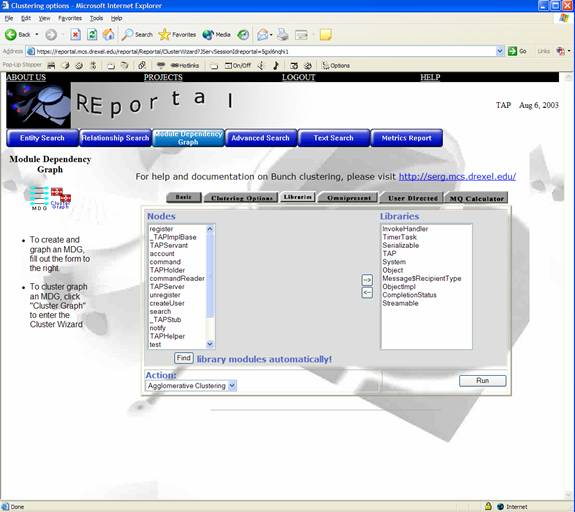

Section 2: Administrative Functions
Section 2-4: Create New Project
Section 3-3: Module Dependency Graph
Section 4 – Graph Visualization
Section 5 - Bug and Enhancement List
REportal is a web-based portal tool that will perform analysis on open-source projects. Upon uploading the source code to REportal, a number of options are available to view both a graphical representation of the project and a searchable text listing of the source code.
The Home, Account and About pages will always be available from the top tab menu, as well as the Login and Help pages. “Sub pages” will be listed in the left hand column. The first function of the system is to log in.
Visitors wishing to obtain a user account should click on the “Sign up now” button to begin the process.
On the sign up screen, visitors must enter their name, company, desired username, password and e-mail address. Upon submitting this information, a new account will be created with the given username and password, allowing the new user to log in.
After logging in, the user is presented with a list of projects and options which can be performed at the project level. Projects are stored in a folder specific to the user logging in. A project may be created from the create new link (left) or a project can be selected, allowing the user to open, rename, delete, upload to or download from it.
Section 2: Administrative Functions
The “administrative functions” are those project-level functions that do not have any bearing on the actual output or analysis of the system. These options include rename, delete, upload, download, and the new project button, and are accessible via a context-menu by right-clicking on a project folder. These functions are relatively straightforward and simple in their design and function.
Under each project folder, users will find two additional subfolders: src and graphs. In graphs, MDG files and graph visualizations will be stored (described later). In src, the uploaded project will be stored. Users may navigate through these folders and upload additional files by clicking the plus signs to the left of the folders, and by right-clicking on the folder-icons themselves.
The screenshot below illustrates the context menu yielding the administrative choices for a particular project:
The rename command provides a dialog box prompting for a new name, and gives the opportunity to cancel the action, as shown below.
The delete command provides an opportunity to cancel before actually deleting the entire project.
The upload command produces a window with a browse button. This button generates a “file-open” dialog. The user is instructed to find the appropriate jar file to continue. The jar file is then uploaded to REportal and included in the active project.
Finally, the download command downloads a zip file that contains all the files that had been uploaded to the project.
Section 2-4: Create New Project
The create new project button produces a dialog prompting the user for a project name and description. The user is returned to the project screen for manipulation of the new project (i.e. uploading files, etc).
The remaining command on the projects screen is the open command. It opens the project and allows for all the remaining actions that can be performed in REportal.

Across the top of the screen the user may (always) logout, get help and close the active project to return to the main project screen. In the main frame a file listing is provided. The file listing shows all the files in the project and allows the user to either delete or download the file.
Similar to the project level, deleting a file provides the user with a confirmation dialog and an opportunity to cancel the action.
Similarly, the download file option saves the requested file.
In both cases, the user is returned to the open project screen upon completion.
The left menu frame is where the bulk of the action will take place. It consists of three parts: an entity search, a relation search and a text search. These actions produce output in a table, Grappa, PostScript, PDF and GIF format. The output is given in a pop-up window.
The entity search allows users to search for files, classes, methods or fields that are contained in the project. Searches can be done by kind and/or by name via regular expressions. The search below is for entities of type “Class” whose name is * (all characters). Hence, this query will return a table list of all classes in the project, as illustrated in the screen shot.

The relation search allows the user to find how parts of the project interact with one another. Whereas an entity search describes the individual pieces of a project, the relation search illustrates how they work together. For example, a relation search can be performed to find what calls individual methods make within the project. In addition, a relation search can produce an inheritance hierarchy to show what classes within the project are derived from others. This search can be performed by specifying the kinds of element to search (class, method, variable and/or file), the name of the entity (as a regular expression) and the kind of relationship to search (hierarchy, call and/or module).
To obtain the table view of the relationship query, the view list button outputs a source list similar to the one given in the entity search. The search results are given in a table.

By specifying the kinds as “Class” and leaving the name at *, the relationship query will return all class to class relationships within the project:
The “Graph” button provides a graphical visualization of the project query, as shown below:
Section 3-3: Module Dependency Graph
The Module Dependency Graph (MDG) section allows users to create an MDG file and visualize it as a graph. In addition, users may organize (cluster) the graph using the Bunch Clustering engine, described shortly. Users simply check the types of relationships desired in the MDG, name the MDG file and click “View” to visualize the graph of that MDG.
To visualize an MDG file that a user has already created, click “View Other” to produce the window below:

The menu above lists MDG files that have been created. Users simply select the desired MDG and click “View.” A graph visualization window will appear, as usual.
The clustering button produces a window requesting options for the clustering graph. An MDG file must first be created by clicking Create next to the MDG menu. Alternatively, a previously-created MDG file may be selected from that menu. After clicking Run, the Output Format menu is populated with the specified clustered output graph in your choice of output format (PDF, PS, Browser / Grappa, GIF). The cluster graph ensures that similar or common data are grouped close together and far apart from data that is not as relevant. Users may either Download or View these formats.
To cluster graphs, REportal implements a clustering package called Bunch. For more information including complete documentation of Bunch, visit http://serg.mcs.drexel.edu/bunch.

The Create window and the Options window include options to Expand, Implement, get Method to Variable or Method to Method relationships as well as options to weight the results and to shop the package name and relation types in the output.

Create MDG File Window
Clustering Options Window
To further customize the algorithm and run time of the clustering, the “Cluster Options” tab can be used.
In addition, the clustering interface can be used to “filter out” omnipresent libraries from the resulting graph. This enables users to further abstract and simplify graphs by eliminating libraries such as “stdio.h” in C and “java.lang.Object” in Java. The “Libraries” and “Omnipresent” tabs are used to accomplish this by moving library nodes to the right hand side of the screen.

Figure 1 - Specify Libraries for the clustered graph
Figure 2 - Specify Omnipresent Clients and Suppliers in the clustered graph
Users that have some knowledge of their system may upload a “SIL” file to the REportal system via the “User Directed” tab. This file specifies some information regarding which modules should be put together in a clustered graph. By using the upload button, users may specify a SIL file from their filesystem.
Finally,
the “quality” of a clustered output can be measured
somewhat by using the MQ Calculator. To accomplish this, an MDG file
must be selected and a SIL file must be uploaded. The MQ value is
specified in red at the bottom of the screen.
The Advanced Search window (below) that allows the user to query the uploaded project in a number of ways. The most common of these queries are provided via the “entity search” and “relationship search” accessible from the project view.

Performing a search by filling out the desired fields returns a list of search results in a typical table listing. The source code is provided at the bottom of the screen, and the view can be presented either as a graphic, table, or a graph view.

The text search allows users to do a simple find on files for a text string. They may type in the name of a class, part of a variable name, etc. and click on the graphic to perform the desired search. At the user's option, text searches can be made case-insensitive via the checkbox provided.
Find returns a list of search results in a typical table listing.
Upon clicking the file name link, users may view a pop-up window of the source code. The source code is hyperlinked to show documentation and / or reachability of code, as shown below.
REportal will display a metrics report of your project. Using the GNU tool JavaNCSS, REportal will display information such as counts of comments, non-comment lines of code (NCSS), number and lines of javadocs, number of classes and functions, and the Cyclomatic Complexity Number (CCN, basically the number of paths one can execute in a function) of each function. If a value is regarded as “bad,” such as a low number of comments and javadocs or a high CCN, it will be displayed in red text for emphasis. An example of a metrics report is given in the screenshot below.
Section 4 – Graph Visualization
Graph visualization is performed via the Grappa Java applet. Through Grappa, several features are available in addition to the standard visualization. These functions are available across the bottom of the graph. They include “Reachability Query,” “Clustered Graph View,” “Interactive Cluster View,” and “Advanced Cluster This Graph.”
The Reachability Query is accessible by clicking on a graph entity and clicking the Reachability Query button. This specifies that the user desires to perform a reachability query on that selected node. It produces a window as shown below:
By filling out the above criteria, such as the type of project entities to search for, the direction of the reachability and the desired view and depth, users can create a table view of the reachability (shown below). In addition, users may view the source code or generate javadoc documentation on the entity.

The Clustered View and Advanced Clustering provide a Bunch-clustered representation of the graph. The results are far easier to interpret and read, as the graph is broken up into subsystems based upon the relationships of the project. The Clustered View button immediately produces a clustered graph based on classic settings. If Advanced Cluster This Graph is chosen, users are taken to the Cluster Wizard to customize the options before the graph is clustered. The result is shown below.
Similar to “Clustered View,” the “Interactive Cluster View” provides an instant clustered representation of the graph. However, the interactive view represents entire clusters as individual nodes in the graph (see the light green nodes in the screenshot below). When users alt-click these nodes, they open up into the cluster that it contains. Alt-clicking in an open cluster collapses it into a single node again. Users may open and close as many clusters as they wish, and if the Tree View is enabled in the Bunch configuration, clusters may contain other clusters as well (which would also be represented as a single node). Hence, one can produce a hierarchical view of their system. The individual cluster nodes are color-coded based on their relative density of contained nodes. Red colored nodes are more dense, while blue and green nodes are less dense.

As its name implies, the Center This Graph option automatically scrolls the Grappa visualization window to the center.
Finally, the Bird's Eye View provides a small pop-up window that shows the entire graph at-a-glance.
If users click inside this Bird's Eye View (BEV), the view in the Grappa visualization window will be scrolled to the location the user clicked. Users may also click and drag a box inside the BEV, and the Grappa visualization window will zoom and scale to the desired box.
Section 5 - Bug and Enhancement List
Make Reachability Query available not just in Grappa
Tree View is not available as an option from Bunch API
Integrate C++